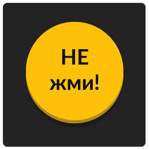

ТУПО ЛЮБИЙ ТЕКСТ
Подальші два роки запам’яталися
Подальші два роки запам’яталися встановленням нових рекордів, адже́ кількість учасників збільшилася вдвічі. До речі, дюк де Рішельє також долучається до цієї події.
Четвертий рікЧетвертий рік поспіль ПЕРЕКРЕСЛЕНО святковий гардероб герцога поповнюється найрізноманітнішими виши́ванками: блакитно-синій і яскраво-червоний, жовтогарячий і ніжно-зелений –
ось палітра його ви́шитих візерунків.
ТУПО ТЕКСт ЧЕРВОНОГО КОЛЬВОРУ

VIDEO